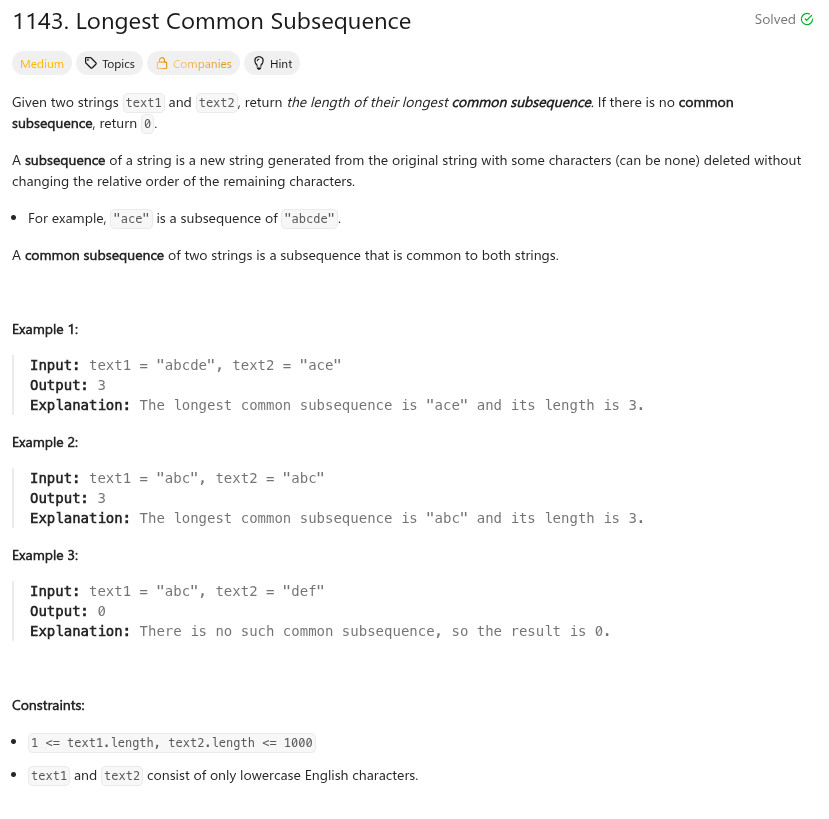
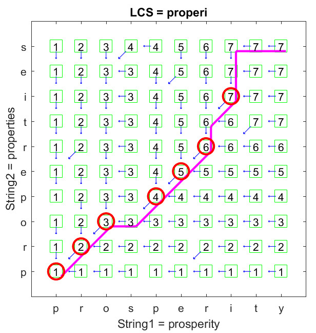

參考資訊：
https://www.cnblogs.com/grandyang/p/14230663.html
http://mirlab.org/jang/books/dcpr/dpLcs.asp?title=8-2%20Longest%20Common%20Subsequence&language=chinese
題目：


int max(int a, int b)
{
return a > b ? a : b;
}
int longestCommonSubsequence(char *text1, char *text2)
{
int i = 0;
int j = 0;
int t1_len = strlen(text1);
int t2_len = strlen(text2);
int r[1001][1001] = { 0 };
for (i = 1; i <= t1_len; i++) {
for (j = 1; j <= t2_len; j++) {
if (text1[i - 1] == text2[j - 1]) {
r[i][j] = r[i - 1][j - 1] + 1;
}
else {
r[i][j] = max(r[i - 1][j], r[i][j - 1]);
}
}
}
return r[t1_len][t2_len];
}